Salt Lake City Travel Guide
Capital and most populous city of Utah is the urban center of the state, featuring a blend of modern architecture, cultural institutions, and outdoor recreation opportunities framed by dramatic mountain scenery.
Top Locations


-400.jpg)

Places to See in Salt Lake City
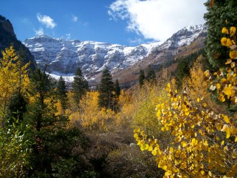
Staplegunther, CC BY-SA 3.0, via Wikimedia Commons; Image Size Adjusted

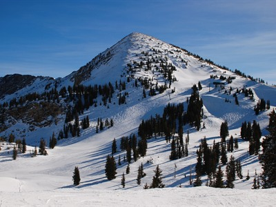
Jake Spurlock, CC BY 2.0, via Wikimedia Commons; Image Size Adjusted

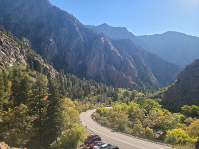
GyozaDumpling, CC BY-SA 4.0, via Wikimedia Commons; Image Size Adjusted

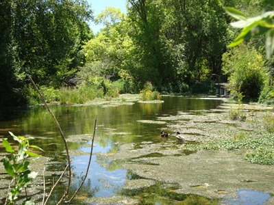
A J Butler, CC BY 3.0, via Wikimedia Commons; Image Size Adjusted

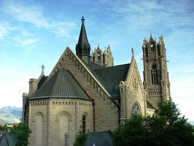
David Jay Fullmer, CC BY-SA 4.0, via Wikimedia Commons; Image Size Adjusted

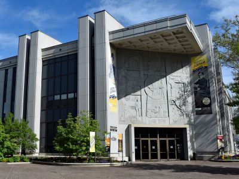
Beneathtimp, CC0, via Wikimedia Commons; Image Size Adjusted

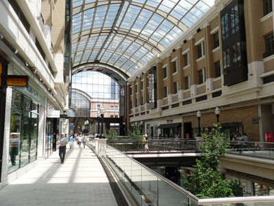
Jordan W, CC BY-SA 3.0, via Wikimedia Commons; Image Size Adjusted
.jpg){kind=link}
City Creek Center
Mixed-use development with an upscale open-air shopping center, office and residential buildings, fountain, and simulated creek near Temple Square in downtown Salt Lake City
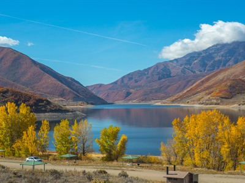
Murray Foubister, CC BY-SA 2.0, via Wikimedia Commons; Image Size Adjusted
.jpg){kind=link}
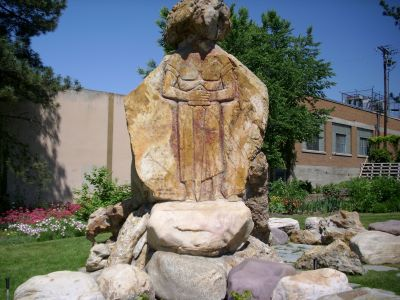
Intothewoods29, Public domain, via Wikimedia Commons; Image Size Adjusted

Gilgal Sculpture Garden
Small public city park filled with unusual symbolic statuary associated with Mormonism
Jaydec, CC BY-SA 3.0, via Wikimedia Commons; Image Size Adjusted

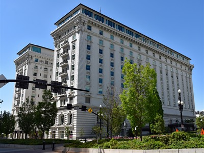
Beneathtimp, CC0, via Wikimedia Commons; Image Size Adjusted

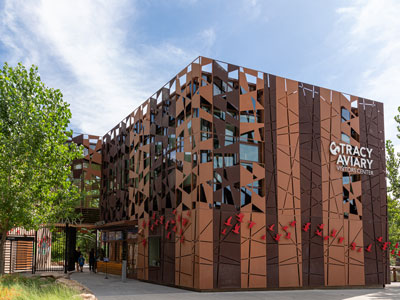
Pollardjosephd, CC BY-SA 4.0, via Wikimedia Commons; Image Size Adjusted

Liberty Park
Popular public urban park in Salt Lake City is the city's second-largest public park, at 80 acres (32 ha)
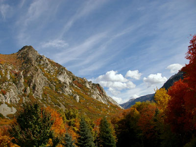
Scott CAtron, CC BY-SA 2.0, via Wikimedia Commons; Image Size Adjusted

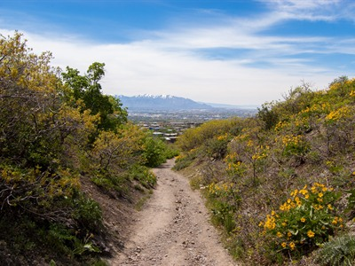
Jeff Robinson, CC BY-SA 2.0, via Flickr; Image Size Adjusted
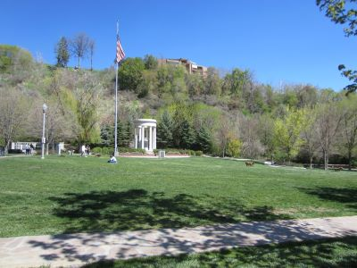
Another Believer, CC BY-SA 4.0, via Wikimedia Commons; Image Size Adjusted
_-_062.jpg){kind=link}
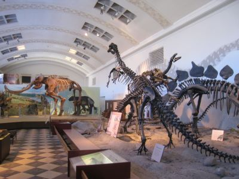
Daderot, Public domain, via Wikimedia Commons; Image Size Adjusted

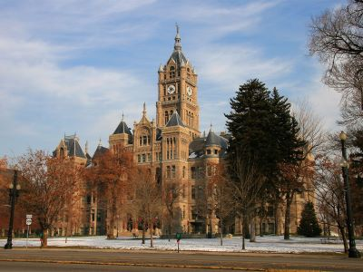
Sean Breazeal, Public domain, via Wikimedia Commons; Image Size Adjusted

-400.jpg)
Tamanoeconomico, CC BY-SA 4.0, via Wikimedia Commons; Image Size Adjusted
.jpg){kind=link}
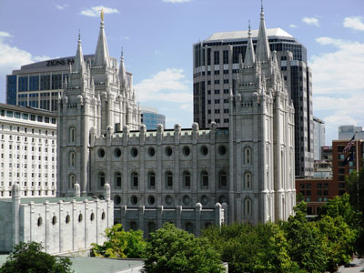
Jordan W., CC BY-SA 3.0, via Wikimedia Commons; Image Size Adjusted
.jpg){kind=link}
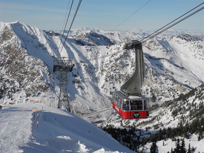
VeggieGarden, CC BY-SA 4.0, via Wikimedia Commons; Image Size Adjusted

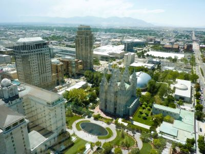
Chris06, CC BY-SA 4.0, via Wikimedia Commons; Image Size Adjusted
.jpg){kind=link}
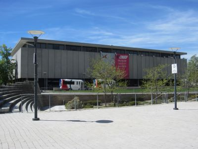
Another Believer, CC BY-SA 4.0, via Wikimedia Commons; Image Size Adjusted
_-_189.jpg){kind=link}
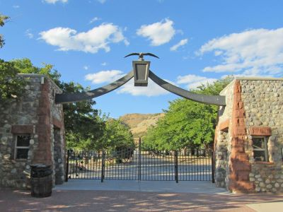
Beneathtimp, CC0, via Wikimedia Commons; Image Size Adjusted

David Luhr, Utah Museum of Contemporary Art, CC BY-SA 3.0, via Wikimedia Commons; Image Size Adjusted

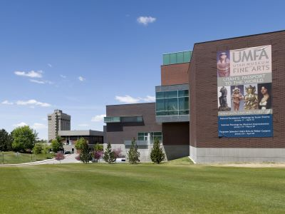
Pegiko, CC BY-SA 4.0, via Wikimedia Commons; Image Size Adjusted

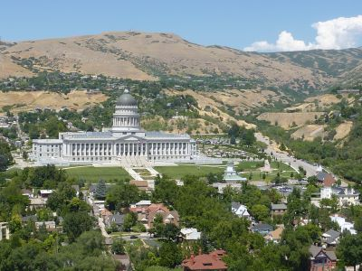
Chris06, CC BY-SA 4.0, via Wikimedia Commons; Image Size Adjusted
.jpg){kind=link}
Utah State Capitol
House of government for the state of Utah, the Neoclassical revival, Corinthian style building built between 1912 and 1916 and added to the National Register of Historic Places in 1978
Overview
Salt Lake City is the capital and most populous city of Utah, with about 200,000 residents and more than a million in the metropolitan area. It sits in a valley at the base of the Wasatch Range, just south of the Great Salt Lake, and it is the world headquarters of The Church of Jesus Christ of Latter-day Saints, whose Temple Square is one of the most visited sites in the state.
People come to Salt Lake City for its access to the outdoors: world-class ski resorts such as Snowbird and Alta are less than an hour away, and the city hosted the 2002 Winter Olympics. Visitors also come for its museums, its historic and religious sites, a lively food and craft beer scene, and as the starting point for trips to Utah's national parks.
History
Shoshone, Ute, and Goshute peoples lived in the valley before Brigham Young led Mormon pioneers into it in July 1847, and the settlers laid out a grid of wide streets around the temple site. The city grew with the arrival of the transcontinental railroad in 1869 at nearby Promontory, silver and copper mining, and the immigration of church converts from Europe. Utah became a state in 1896 with Salt Lake City as its capital, and the city has grown into a regional center for government, finance, health care, and technology.
Great Salt Lake
The city takes its name from the Great Salt Lake, the largest saltwater lake in the Western Hemisphere, which lies about 15 miles northwest of downtown. It is a remnant of ancient Lake Bonneville, which covered much of western Utah until about 14,000 years ago, and it has no outlet, so water leaves only by evaporation and the lake is several times saltier than the ocean. The lake's size changes with snowmelt and drought, and in recent years it has fallen to record lows. Antelope Island State Park, with its bison herd and beaches, and the Great Salt Lake Marina are the main places to visit, and the lake is an important stop for millions of migratory birds, including eared grebes and phalaropes. Brine shrimp, which feed the birds, support a commercial harvest, and swimmers float easily in the dense water.
The Church of Jesus Christ of Latter-day Saints
The city's character has been shaped by The Church of Jesus Christ of Latter-day Saints, whose members, often called Mormons, fled persecution in the Midwest and arrived in the valley in 1847 under Brigham Young. They named the region Deseret, irrigated the desert with canals, and founded hundreds of towns across the Intermountain West from Salt Lake City, which became the center of their church. The church's headquarters remain here, and it is a major landowner and employer, with offices, a large genealogy library, a publishing and broadcasting operation, and the semiannual General Conference that fills the Conference Center. Its influence appears in the city's wide grid streets, which are numbered outward from the temple, in its public holidays such as Pioneer Day on July 24, in its liquor laws and quiet Sundays, and in a large share of residents who are church members. The city has also become more diverse in recent decades, and its religious, cultural, and political life now includes many other faiths and communities.
Temple Square
Temple Square, a 10-acre walled block in the center of downtown, is the spiritual and geographic heart of the city and one of Utah's most visited attractions. It contains the Salt Lake Temple, whose granite walls and six spires took 40 years to build and were completed in 1893, and the domed Tabernacle, home of the Tabernacle Choir at Temple Square and its famous pipe organ, which can be heard at free rehearsals and recitals. The grounds also include the Assembly Hall, two visitor centers, the Family History Library nearby, and gardens that are decorated with lights in December. The temple itself is open only to church members, but visitors of all faiths can walk the grounds, take free tours, and see the Christus statue and exhibits on pioneer history.
Sightseeing and Popular Landmarks
Temple Square holds the Salt Lake Temple, the Tabernacle with its famous organ and choir, and the Joseph Smith Memorial Building. The Utah State Capitol, the Salt Lake City and County Building, the Cathedral of the Madeleine, and the main library are architectural landmarks, and City Creek Center is the main downtown shopping district. The Gilgal Sculpture Garden is a small, unusual folk art attraction, and the Great Salt Lake, Antelope Island, and the Bonneville Salt Flats are popular day trips.
Culture and Museums
The Natural History Museum of Utah, the Utah Museum of Fine Arts, and the Utah Museum of Contemporary Art are the main museums, along with the Church History Museum, the Pioneer Memorial Museum, the Leonardo science and art museum, and the Hill Aerospace Museum to the north. The city is also home to Ballet West, the Utah Symphony and Utah Opera, Pioneer Theatre Company, and the Utah Arts Festival and the Days of '47 celebrations take place each summer.
Parks
This Is the Place Heritage Park is the largest park, with a living history village, and Sugar House Park and Liberty Park are popular city parks with lakes and open lawns. Red Butte Garden and Arboretum has gardens and an outdoor concert series, and Memory Grove and Ensign Peak give views over the valley. The Bonneville Shoreline Trail follows the foothills for about 90 miles, and Big Cottonwood and Little Cottonwood Canyons offer hiking, climbing, and skiing minutes from downtown.
Sports
Salt Lake City has several professional teams: the Utah Jazz of the NBA play at the Delta Center downtown, which also hosts the Utah Mammoth of the NHL, who arrived in 2024. Real Salt Lake (MLS) and the Utah Royals (NWSL) play at America First Field in nearby Sandy, and the Salt Lake Bees (Triple-A baseball) play at Smith's Ballpark. The University of Utah's Utes also draw large crowds for football and basketball.
Seasons and Weather
Salt Lake City has a semi-arid, four-season climate at about 4,300 feet. Summers are hot and dry, with highs in the 90s°F, and winters are cold, with highs near 37°F and about 55 inches of snow in the valley, much more in the mountains. Ski season at the nearby resorts runs from about late November to April, and spring and fall are the most pleasant seasons in the city, though winter inversions can trap haze in the valley.
This article uses material from Wikipedia as well as information from official tourism and institutional sources. Key references include Visit Salt Lake, Salt Lake City Corporation, Temple Square, Utah Office of Tourism, Utah Jazz, and National Weather Service Salt Lake City. Wikipedia material is from the article "Salt Lake City", released under the Creative Commons Attribution-Share-Alike License 3.0.
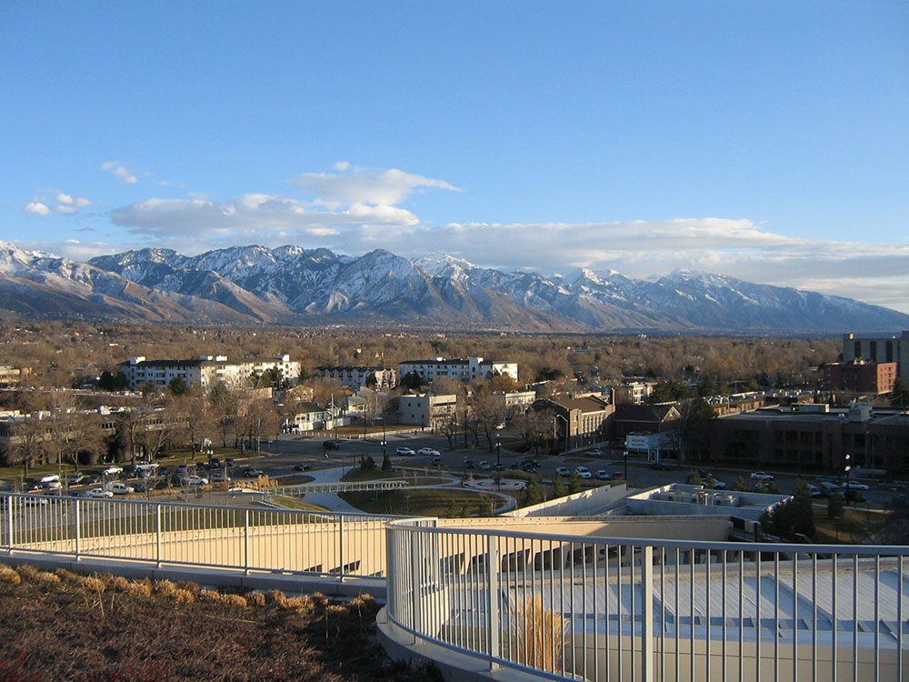
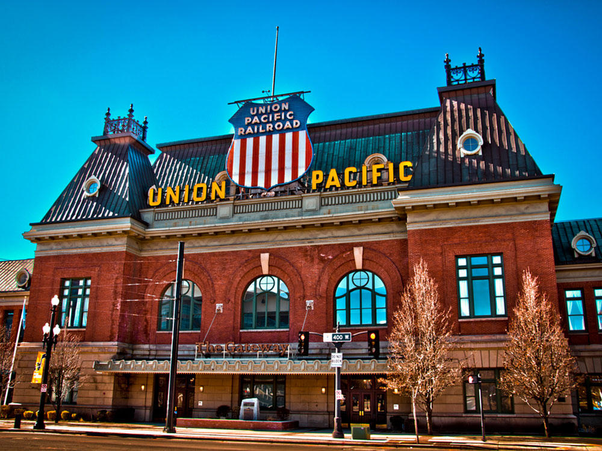

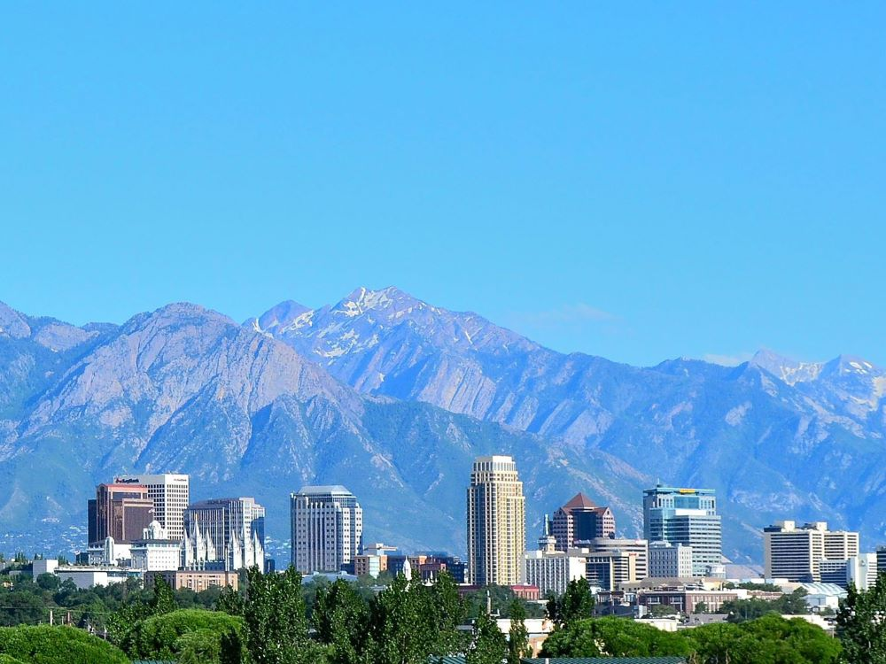

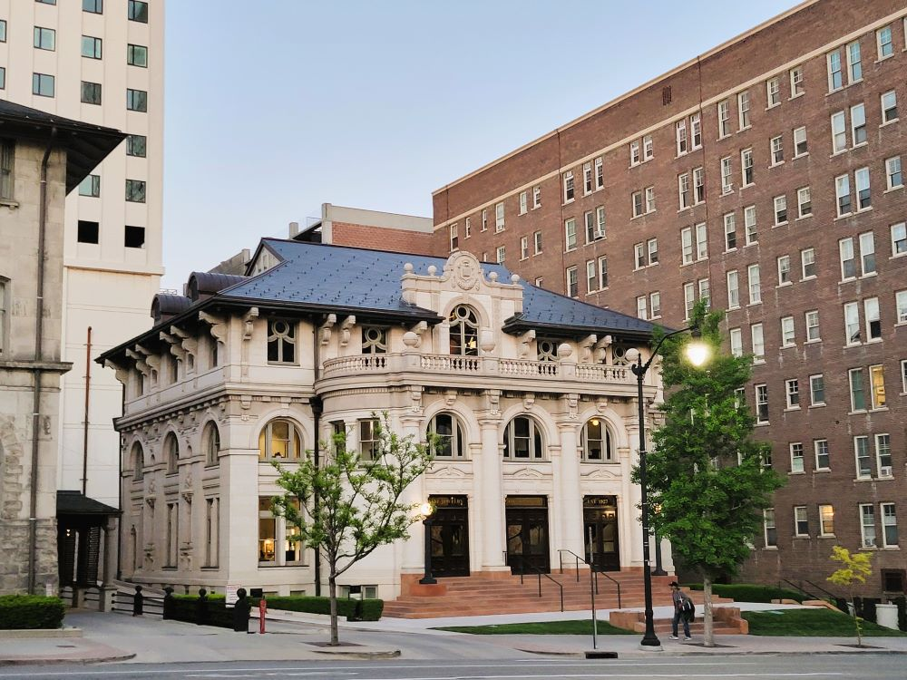